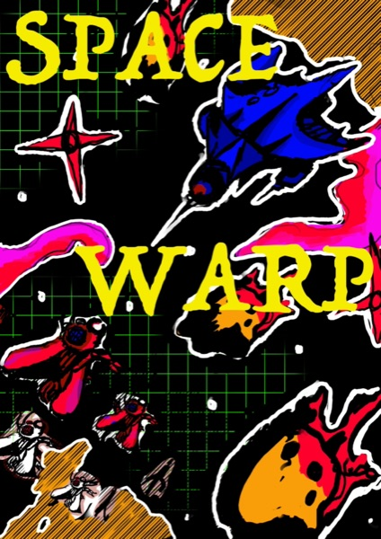
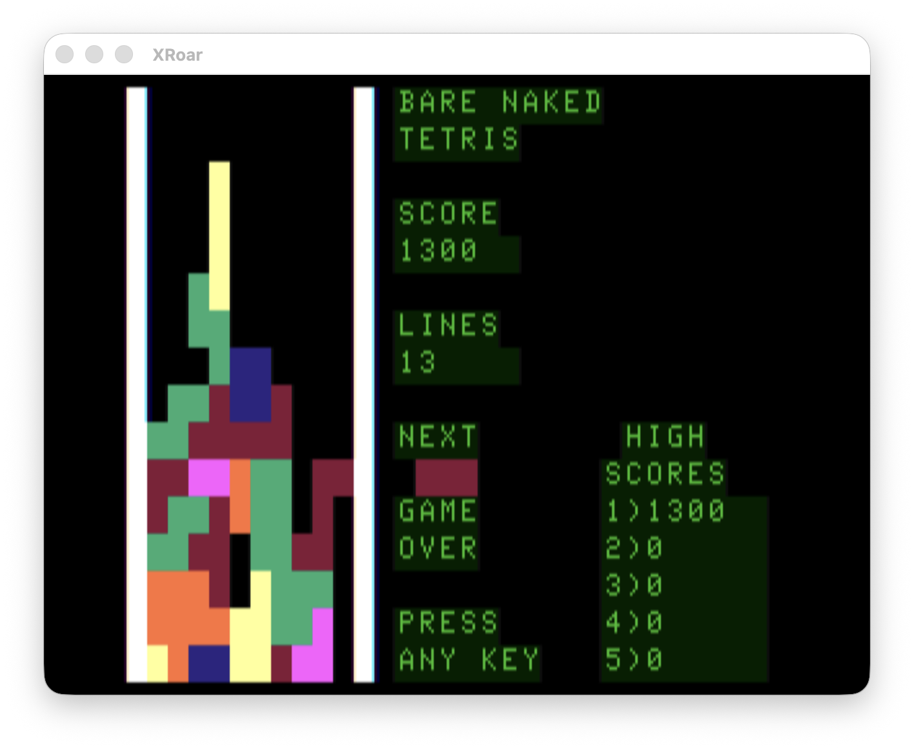
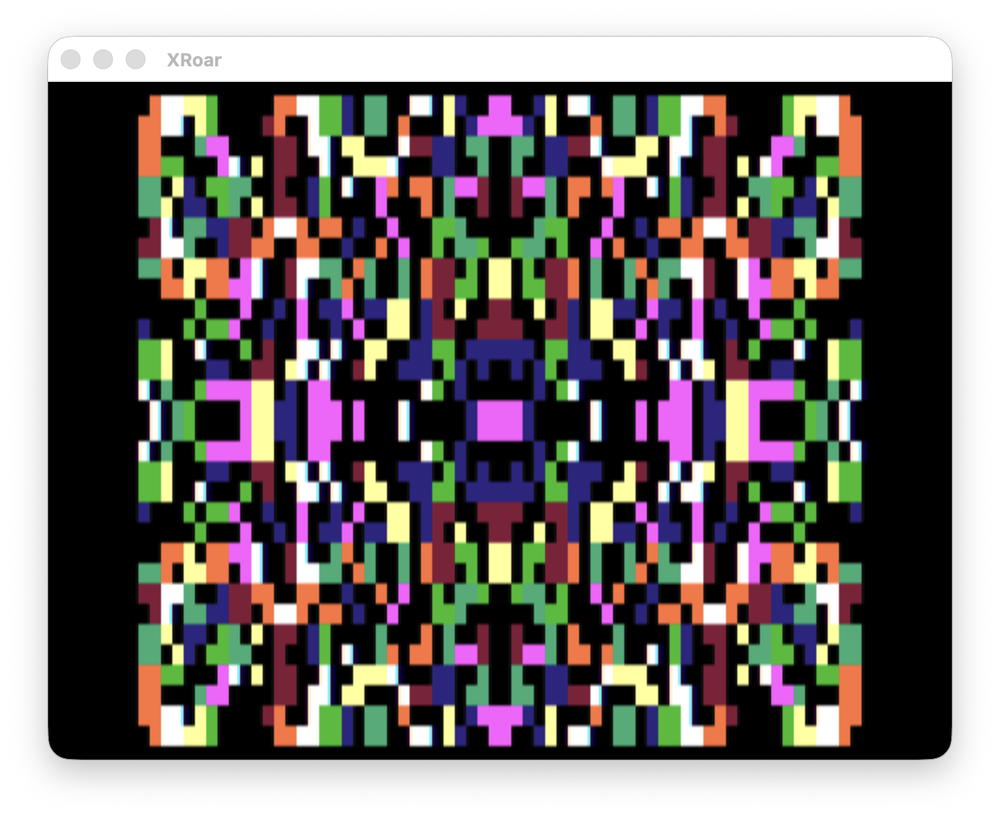
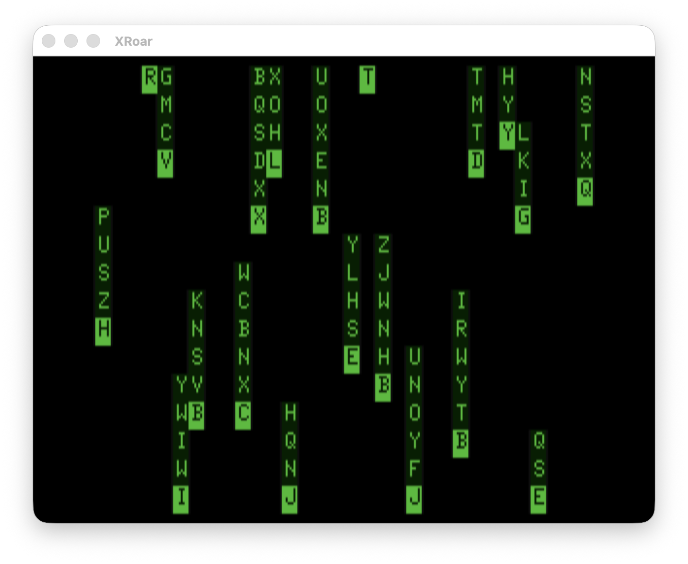
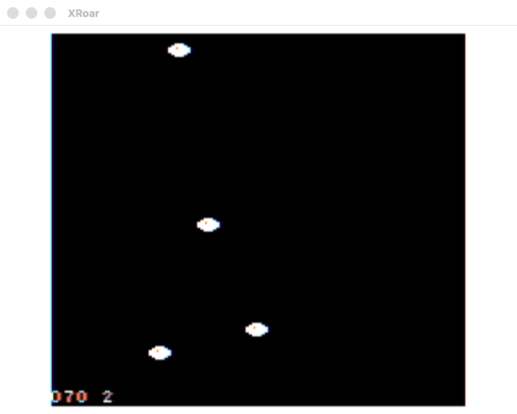

Program in Forth on your modern desktop, and compile to a DECB binary that immediately runs on hardware and popular emulators.
That's the whole idea: the toolchain lives on your development machine, not the CoCo. Nothing gets compiled on the target and nothing extra rides along, just your finished program, loaded and run. Bare Naked Forth is that cross-compiler, paired with a from-scratch 6809 ITC-style Forth kernel that stays out of the way.
Edit, compile and test with modern open source tools like lwasm and XRoar, and then deploy the binaries to vintage hardware using CoCoSDC, FujiNet or DriveWire. The demos below (Tetris, sound, full-screen graphics) are ready to explore, and our detailed tutorial takes you from your first Forth word to a running program on your CoCo.
Built with it

You command the starship Endever against an invading Jovian fleet, and it all runs in real time. The Jovians aren't targets, they're pilots: each has its own genome and a shifting mood. Aggressive aces close to knife-fighting range and fire fast; wounded ones flee glowing blue, and killing one turns its packmates red with rage.
Masers are your fast beam, deadliest up close and needing a clear line of sight. Triton missiles finish the job at any range, but each base holds only a limited stockpile. And the galaxy keeps moving: while you line up a shot, a base across the map is under attack. Clear the fleet before the bases fall.
Play Space Warp on itch.io →
More demos



